En este juego hay muchas armas, concretamente hay 88 armas repartidas en 8 categorias: cuerpo a cuerpo, pistolas, escopetas, subfusiles, fusiles de asalto, rifles, artillería pesada y proyectiles. Para no hacer esta pagina excesivamente larga simplemente vamos a poner algunas armas que se pueden conseguir con relativa facilidad dentro del juego.
- Puño Americano 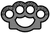
- cuchillo
- pistola
- Pistola calibre 50 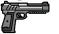
- Pistola electrica 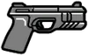
- Pistola pesada 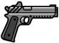
- Microsubfusil 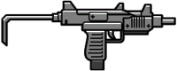
- Subfusil 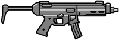
- Subfusil de asalto 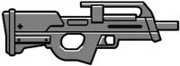
- Minisubfusil 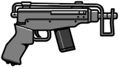
- Ametralladora 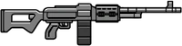
- Ametralladora de combate 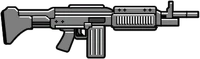
- Ametralladora de combate mkII 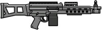
- Fusil de asalto 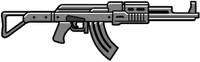
- Carabina 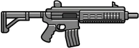
- Fusil avanzado 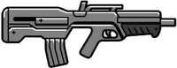
- Carabina especial 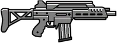
- Fusil compacto 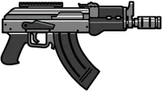
- Carabina MkII 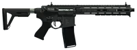
- Fusil de francotirador 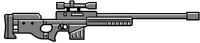
- Fusil de tirador 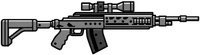
- Escopeta de corredera 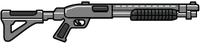
- Escopeta recortada 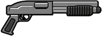
- Mosquete 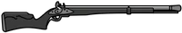
- Lanzagranadas
- Lanzacohetes 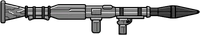
- Minigun 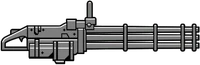
- Granadas 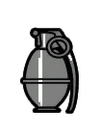
- Bomba adhesiva 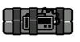
- Satanas del infierno 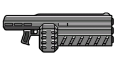